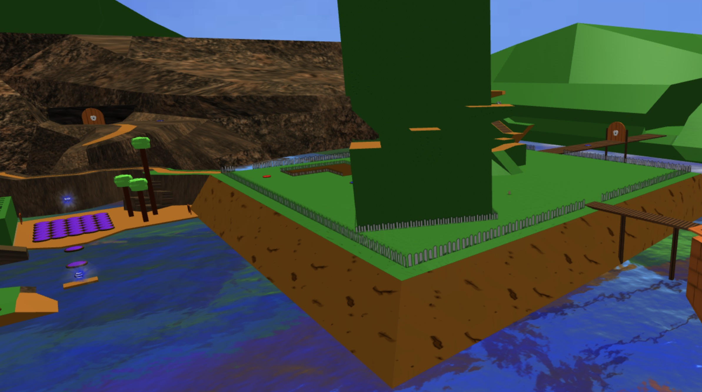
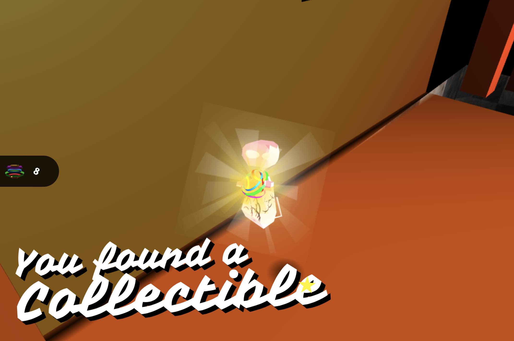
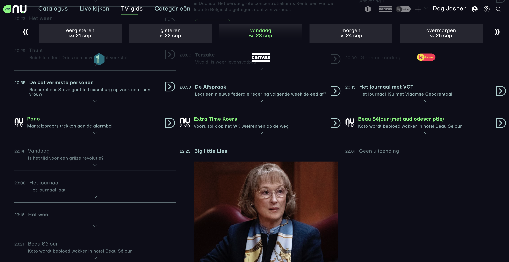
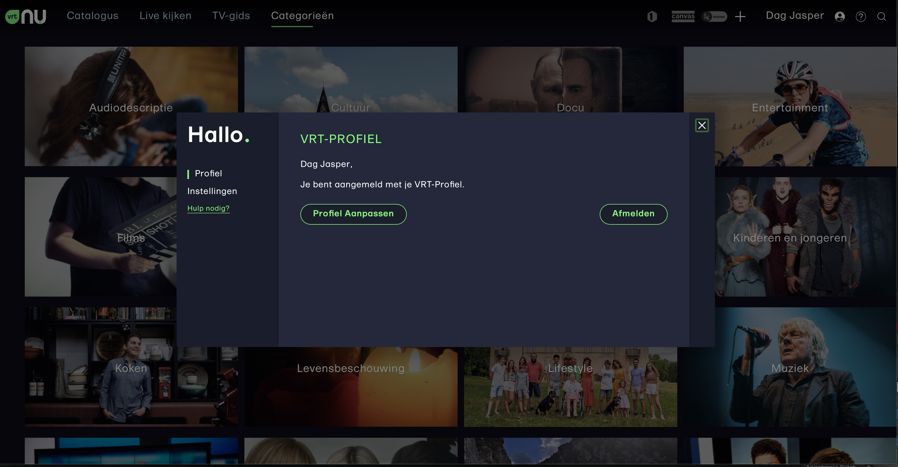
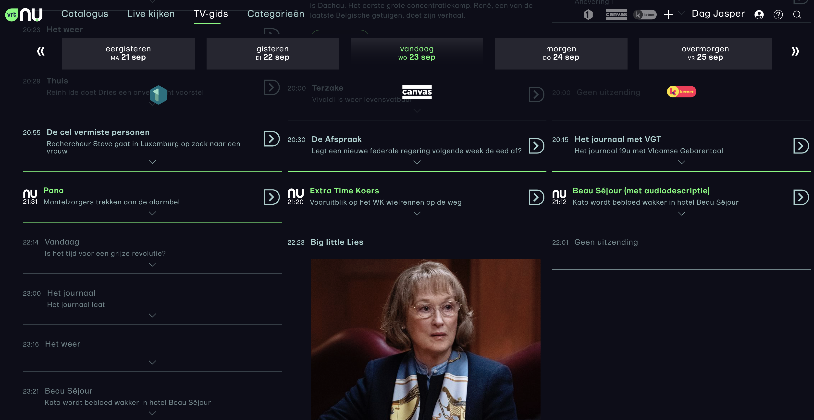
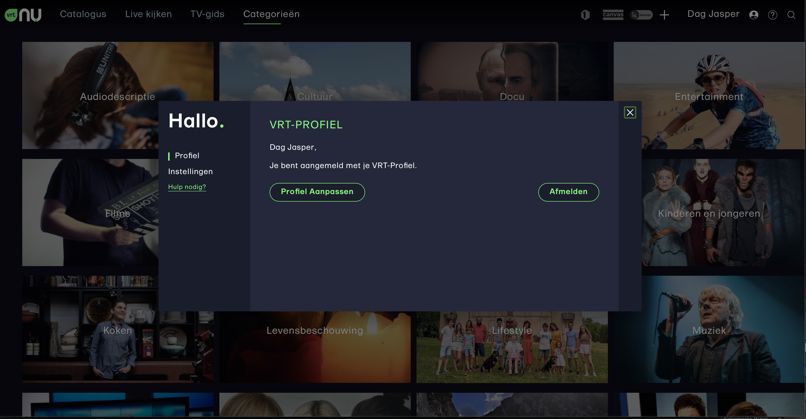

Jasper. Jesp. Jaspucci. That last one might be made up on the spot, actually. But names are just names, and talents are, well, also just talents. But I have some! Starting out in Graphic Design I quickly pivoted to the future: user interaction and experience. Working as a front-end developer at a small London agency I proved my way up to Senior Web Developer at CNN Internationals renowned in-house brand studio Create, before starting as a freelancer and working on projects such as the Flemish VOD service VRT NU, providing a fully-accessible experience, where the only downside was that light green and black isn't considered contrast-y enough by Lighthouse's standards.
I'm a passionate developer - if you get me on your team, I will strive to accomplish the best. I won't settle for a framework simply because, if we can make things more responsive, faster, simpler and more fun, I will push the team and myself to accomplish those lofty goals. I will set out a plan for how to reach those goals, and I intend to do it faster than that. I am outspoken, but trust me, you want me on your team if you want to be woken up from a peaceful slumber that slowly eroded your application.
Apart from coding in Typescript, CSS and HTML I also have experience with some PHP, MySQL, NodeJS and I have dabbled in the occasional Swift and C Sharp. I have played around with Unity and Blender, and know my way around the Creative Suite. If you like React, well, React is just a sprinkle on top of Javascript. You need me to do Angular? I have worked with that! Also, a sprinkle on top of Javascript. I can work with any framework but my favorite is no framework, as I have not yet found one that feels like it hasn't loaded too many features and options on your cart. I have never seen such complexity as a simple file drag-and-drop component containing seventeen other components, and I will ask you "Why?" and you will look at me with that face. You know, that face. And then we will reduce complexity together.
Some Dis I Did
I could definitely put out a more exhaustive list of things here, but over time some links have started disappearing, and browser updates created glitches in code that doesn't get updated. I know how to fix them, but there is no incentive to do so at this point, so I will just show some details and you can click the links if you like. I have more to show that I currently can't list, so be sure to get in touch to see some more of the fantastic work I am doing for a variety of clients!
My Game


No link yet, but a mix of THREEjs, SASS, Blender, GamePads, Keyboards and buttons.
Flemish VOD demand service, focus on accesibility and Web Components
Jasper is a well-balanced mix of bleeding edge curiosity and enterprise level stability. His experience with fast paced creative coding projects for world renowned media company CNN brought us a breath of fresh innovation air to our teams where we already had the mindset of being more innovative than the usual enterprise level companies. He helped pushed our teams forward with his drive for new technology and standards in a qualitative manner and always trying to find ways to write better code. It is this kind of drive to innovate and constantly improve code quality that makes him a valuable asset to any forward thinking company.
Wing Leung,
Software engineer at DPG Media | Freelance Javascript developer
A diverse set of campaigns, including 360° video, SVG animations and a whole lot of client management.
Jasper is an exceptional Developer. Highly technical, but with that rare ability to translate complicated issues for us regular folk. Jasper was always looking to acquire new skills and applied them to some of our most sophisticated projects at CNN - he’d be an asset to any creative business.
Angela Confeggi, Supervising Producer, Create at CNN
There's more, but you will have to have a chat with me so I can show the work I have done on a plethora of projects. Get in touch! Let's also be honest, the woodgrain in the background really got you interested. No? I was sure it would.
Why dis?
Because I want to show something else that isn't the full-width, stock-photo based header. I wanted something different from the photo of an Apple MacBook with gibberish code scrolling down the screen. And I wanted to show a plethora of things I enjoy doing - from building a different kind of UI/UX to animating bones and using them in browser. Actually, I have an entire game I am working on that runs completely in the browser. I'm still working on it, but if you're curious, definitely get in touch, and I might throw a demo your way.
Where dis?
So, well, there's a couple of places you could get in touch or learn more about me, but most of all: I would love to talk to you and help you build better things! You can give it a go on Twitter, check out my GitHub, or contact me through email or phone.
My company is located is Belgium, but I am always on the lookout for any opportunity, company or not. If you want to give me a VISA, I am willing get myself over there. Just get in touch first, I'd like to know up front.
 


